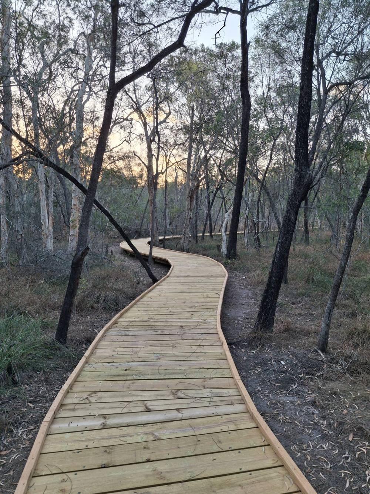
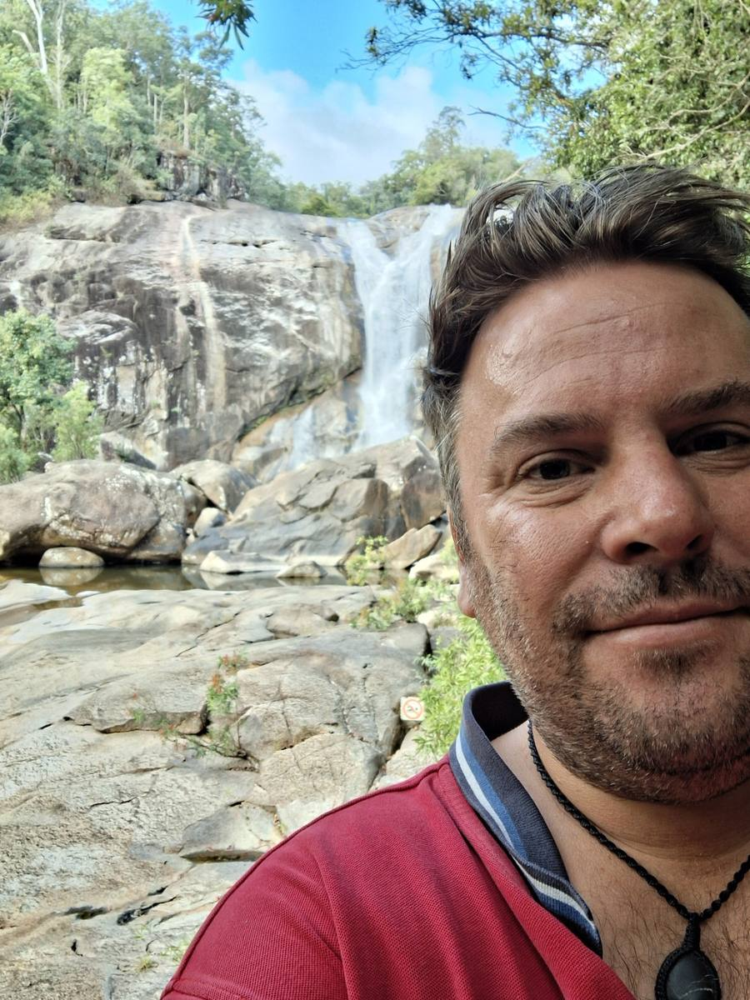
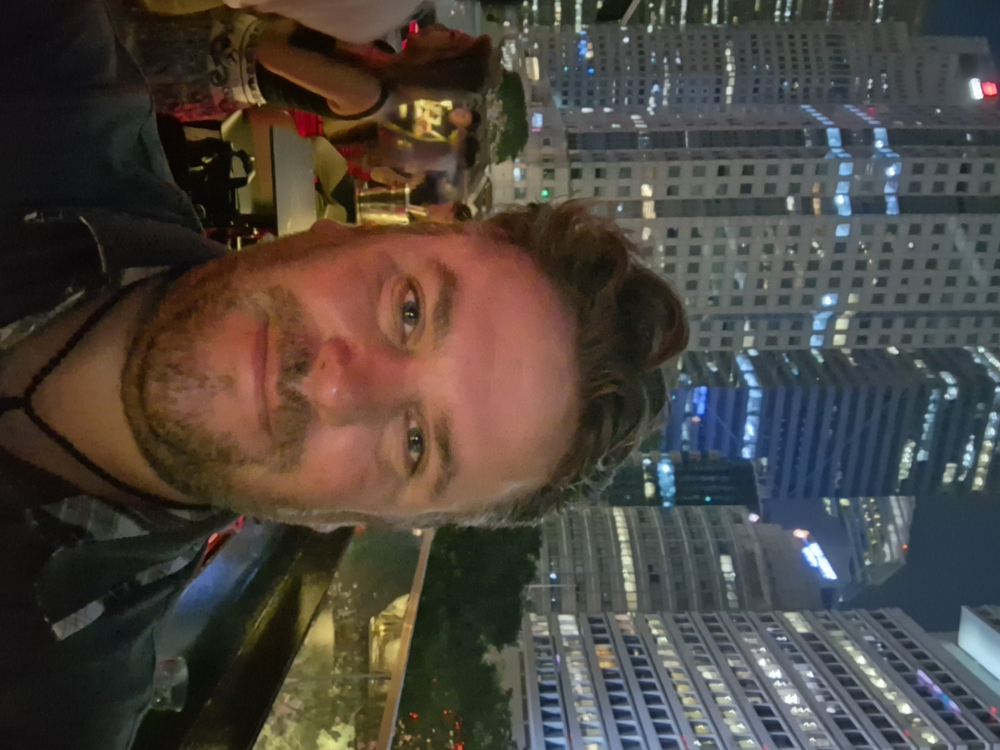
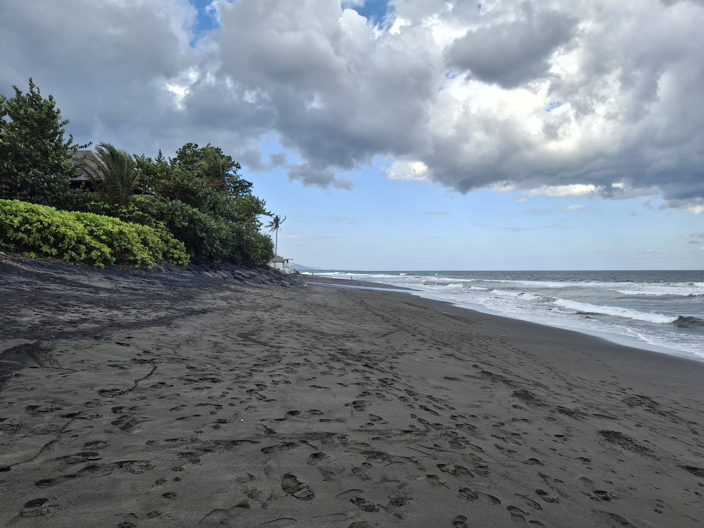
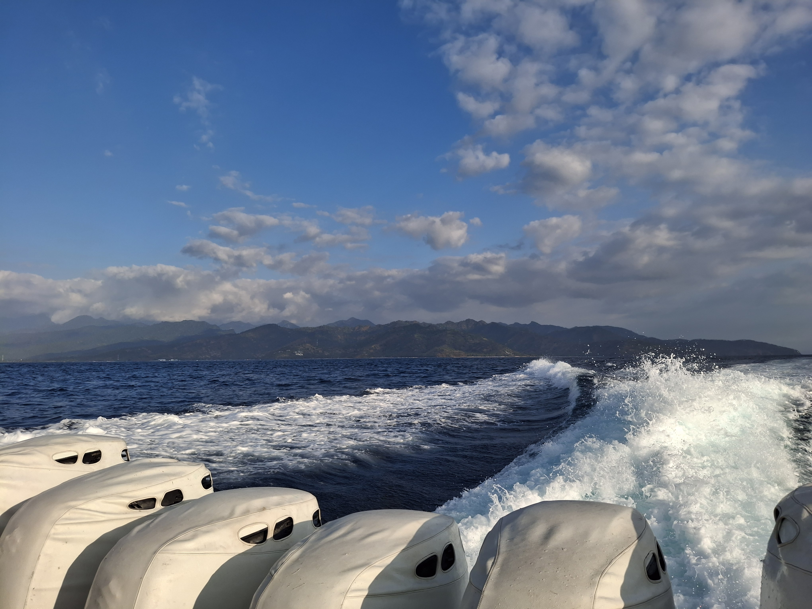

🤝
Zuhören & Verstehen
Ein Gespräch auf Augenhöhe, in dem deine Erfahrungen ernst genommen werden.
Peer-Beratung für Menschen mit Depressionen, Psychose- und Schizophrenie-Erfahrung – mit Verständnis, Respekt und dem Wissen, wie sich schwierige Phasen anfühlen können.

Peer-Beratung ersetzt keine ärztliche oder psychotherapeutische Behandlung. Sie kann aber eine wertvolle Ergänzung sein.
Ein Gespräch auf Augenhöhe, in dem deine Erfahrungen ernst genommen werden.
Gemeinsam kleine, realistische Schritte entwickeln, die zu deiner aktuellen Situation passen.
Ressourcen entdecken, Ziele sortieren und überlegen, welche Unterstützung sinnvoll sein könnte.
Ich kann aus eigener Erfahrung Perspektiven anbieten – ohne deine Geschichte mit meiner gleichzusetzen.
Auch nach schweren Phasen können neue Möglichkeiten entstehen. Wir schauen gemeinsam nach vorne.
Du bestimmst, worüber du sprechen möchtest. Grenzen und Privatsphäre werden respektiert.
Wir klären kurz, wie es dir gerade geht und was du dir vom Gespräch wünschst.
Wir schauen gemeinsam auf das, was dich beschäftigt – ohne Leistungsdruck.
Zum Abschluss halten wir fest, was dir konkret helfen könnte und was du als Nächstes ausprobieren möchtest.

Daniel Away, 43
Peer-Berater · Genesungsbegleiter in Ausbildung · Experte aus Betroffenensicht
Ich bin studierter Ingenieur und habe über viele Jahre verschiedene Positionen in internationalen Konzernstrukturen mit hoher Verantwortung für Kosten, Termine und Technik übernommen.
Mit 32 Jahren erkrankte ich erstmals an einer Psychose. Es folgten wiederkehrende Schübe und wahnhafte Phasen, längere Krankheitszeiten, eine missglückte Wiedereingliederung und eine Langzeit-Reha. Auch jahrelange Therapie war Teil meines Weges.
Seit einigen Jahren beziehe ich eine Erwerbsminderungsrente und danach habe ich mich anschließend zum Genesungsbegleiter Ex-In Kurs angemeldet, den ich fast abgeschlossen habe.
Ich habe mir ein neues Umfeld und ein neues Leben im Ausland aufgebaut. Mein Traum von einem ortsunabhängigen Leben mit eigenem Camper ist Wirklichkeit geworden – für mich ein wichtiger Schritt hin zu mehr Freiheit und Selbstbestimmung.
Heute unterstütze ich Menschen rund um die Themen Psychische Krisen, Depression, Psychose und Schizophrenie – aus der Sicht eines erfahrenen Experten aus Betroffenensicht.
Ich höre dir zu, möchte Mut machen und biete aus eigener Erfahrung Perspektiven an
Mein Angebot möchte ich zunächst ehrenamtlich machen. Denn ich weiß aus eigener Erfahrung, wie wertvoll es sein kann, in schwierigen Zeiten jemanden an seiner Seite zu haben, der zuhört, versteht und nicht vorschnell urteilt.
Du bist nicht deine Diagnose. Und dein bisheriger Weg muss nicht dein zukünftiges Leben bestimmen. Das Neue Leben kostet einen manchmal das Alte.
Bilder, die für Bewegung, Natur, Ruhe und den Mut stehen, neue Wege zu gehen.



Schreib mir gern eine unverbindliche Nachricht. Wir können kurz besprechen, worum es geht und ob Peer-Beratung für dich passen könnte.
Ort / Format: [z. B. online, Telefon, vor Ort nach Verfügbarkeit]
Wichtig: Bei akuter Selbst- oder Fremdgefährdung oder einem medizinischen Notfall bitte sofort den örtlichen Notruf bzw. eine psychiatrische Notfallversorgung kontaktieren. Peer-Beratung ist kein Ersatz für eine Notfallbehandlung.